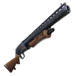
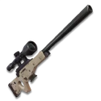
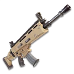
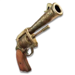

The Tac SMG is my absolute favorite weapon in all of Fortnite.
Stats:
DPS
162 (UNCOMMON)
189 (LEGENDARY)
Damage
18 (UNCOMMON)
21 (LEGENDARY)
Fire Rate
9
Magazine Size
25
Reload Time
2.2s (UNCOMMON)
1.9s (LEGENDARY)

The iconic pump shotgun was my go to back in season one, the double pump being unmatched
Stats:
Damage per Second
64.4 (COMMON)
89.6 (LEGENDARY)
Damage
92 (COMMON)
128 (LEGENDARY)
Fire Rate
0.7
Magazine Size
5
Reload Time
5.1s (COMMON)
3.7s (LEGENDARY)

Snipers in any game I love, the bolt action sniper is my second favorite weapon in OG Fortnite. The one shot headshot potential was unmatched.
Stats:
DPS
74.25 COMMON
90.75 LEGENDARY
Damage
99 COMMON
121 LEGENDARY
Fire Rate
0.75
Magazine Size
1
Reload Time
3.3s COMMON
2.5s LEGENDARY

The rocket launcher is in my opinion the funnest weapon to use in OG Fortnite. Shooting down a try hard with it that would crank 90s into the atmosphere with it was so satisfying.
Stats:
DPS
52.5 COMMON
97.5 LEGENDARY
Damage
70 COMMON
130 LEGENDARY
Fire Rate
0.75
Magazine Size
1
Reload Time
4.68 Sec COMMON
2.52 Sec LEGENDARY

Ol' Reliable, the joy I felt when I found my first gold SCAR was unmatched, one of the best moments of my life. It will probably rival my wedding day.
Stats:
Damage per Second
165 (COMMON)
198 (LEGENDARY)
Damage
30 (COMMON)
36 (LEGENDARY)
Fire Rate
5.5
Magazine Size
30
Reload Time
2.7s (COMMON)
2.2s (LEGENDARY)

Getting one taps with this thing was one of the most satisfying things ever.
Stats:
DPS
81 (COMMON)
99 (LEGENDARY)
Damage
54 (COMMON)
66 (LEGENDARY)
Fire Rate
1.5
Magazine Size
6
Reload Time
2.2 Sec (COMMON)
1.8 Sec (LEGENDARY)